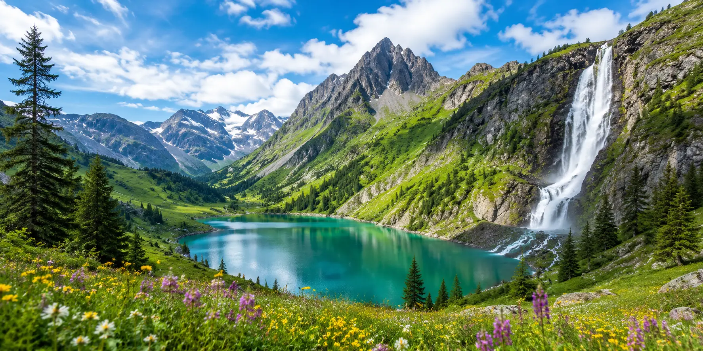

Northern lights, spectacular blooms, wildlife migrations and seasonal landscapes: discover the world's most beautiful natural phenomena month by month and find the perfect time to experience them while travelling.
📅 Best season: from autumn to early spring
📍 Tromsø and Northern Norway
🌌 Curtains of green light, sometimes tinged with pink or purple, can appear in the sky when solar activity interacts with the upper layers of Earth's atmosphere.
💡 January brings long nights to Northern Norway, making it an excellent time to search for the Northern Lights. However, this is a natural phenomenon and sightings can never be guaranteed.
📅 Best season: September to March
📍 Iceland
🌌 When the sky is dark and clear enough, glowing curtains of green light, sometimes pink or purple, can appear above Iceland's dramatic landscapes.
💡 February still offers long nights combined with spectacular winter scenery. However, the Northern Lights remain unpredictable: sightings depend on solar activity, cloud cover and local conditions.
📅 Mainly during winter
📍 Abraham Lake, Alberta — Canada
🧊 Methane bubbles produced beneath the water can become trapped within several layers of ice, creating striking white patterns beneath the frozen surface.
💡 Abraham Lake is one of the world's best-known places to observe this phenomenon. However, ice conditions can be unstable, so visits should always take local conditions and safety advice into account.
📅 Generally from January to March
📍 Baja California Sur, Mexico
🐋 Every winter, gray whales migrate to the sheltered lagoons of the Baja California Peninsula to breed and give birth.
💡 Places such as San Ignacio Lagoon and Magdalena Bay are among the most renowned locations for witnessing this spectacular migration while respecting local wildlife regulations.
📅 Generally from March to April depending on the region
📍 Japan — especially Tokyo, Kyoto and Osaka
🌸 For a few days, thousands of cherry trees burst into pink and white blossoms, transforming parks, temples and riverbanks.
💡 The blossom season gradually moves from southern to northern Japan, and dates vary each year depending on temperatures. “Hanami”, the tradition of admiring the flowers, makes this one of the country's most iconic travel seasons.
📅 Possible between February and April depending on the year
📍 California, United States
🌼 After particularly favourable winter conditions, some desert regions can become covered in millions of wildflowers.
💡 The phenomenon known as a “super bloom” does not occur every year, and its intensity depends heavily on rainfall, temperatures and many other natural factors. When it happens, desert landscapes can be completely transformed.
📅 Winter viewing season until March
📍 Michoacán and the State of Mexico — Mexico
🦋 Millions of monarch butterflies spend the winter clustered together in the mountain forests of central Mexico before beginning their migration north.
💡 In late winter, warmer temperatures increase their activity before departure. Several sanctuaries offer the opportunity to observe this extraordinary natural phenomenon in protected areas.
📅 Generally from late March to early May
📍 Netherlands — especially around Lisse
🌷 In spring, vast tulip fields cover parts of the Dutch countryside with bands of red, yellow, pink, purple and white.
💡 April is generally the heart of tulip season. The area around Lisse, between Amsterdam and The Hague, is especially famous for its colourful landscapes and the renowned Keukenhof gardens. Exact blooming times still depend on weather conditions.
🌍 Discover Amsterdam📅 Generally from late March to mid-April
📍 South Korea — especially Seoul, Jinhae and Gyeongju
🌸 As spring returns, cherry trees cover parks, avenues and riverbanks across many South Korean cities with white and pink blossoms.
💡 The bloom generally progresses from south to north across the country. Jinhae is particularly famous for its cherry blossoms, while Seoul offers many easily accessible places to enjoy the season.
🌍 Discover Seoul📅 Generally from mid-April to early May
📍 Japan — especially Ashikaga and Kitakyushu
💜 Huge clusters of purple, pink and white wisteria form flower tunnels and cascading displays in several Japanese gardens.
💡 After cherry blossom season, wisteria provides another remarkable spring spectacle. Ashikaga Flower Park and Kawachi Wisteria Garden are among the most famous places to see them.
📅 Possible at different times of the year
📍 Maldives
✨ On some nights, bioluminescent plankton can produce tiny blue flashes when the water is disturbed, sometimes creating the impression of a starry sky along the ocean's edge.
💡 This phenomenon is natural and unpredictable. Its visibility depends on factors such as plankton concentration, currents, weather and ambient light, so no trip can guarantee a sighting.
📅 Several nesting seasons depending on the species and coastline
📍 Costa Rica
🐢 Every year, different species of sea turtles return to Costa Rica's beaches to lay their eggs, sometimes in very large numbers.
💡 Timing varies considerably depending on the species and region. Protected sites on both the Caribbean and Pacific coasts make it possible to observe certain stages of this natural cycle through regulated excursions.
📅 Mainly in spring
📍 Himalayan region — Nepal
🌺 In spring, the rhododendron forests of Nepal's mountains burst into red, pink and white flowers, with the Himalayan peaks rising in the background.
💡 Several trekking routes pass through these flowering forests. Altitude strongly influences the blooming period, which gradually shifts towards higher elevations as spring progresses.
📅 From May to July depending on latitude
📍 Northern Norway — especially Tromsø and the Lofoten Islands
☀️ Beyond the Arctic Circle, the Sun can remain visible above the horizon throughout the night, creating several weeks of almost continuous daylight.
💡 June is one of the best times to experience the midnight sun in Northern Norway. Night-time hikes, scenic drives and the landscapes of the Lofoten Islands become especially spectacular during this period.
📅 Timing varies depending on the destination
📍 Several regions of South America
🌺 When jacaranda trees bloom, their purple flowers transform certain avenues and parks into striking colourful landscapes.
💡 The flowering period varies greatly depending on the climate and destination, so it is best to check local conditions before planning a trip specifically around this phenomenon.
📅 Generally from May to November depending on the region
📍 Australia's east and west coasts
🐋 Thousands of humpback whales migrate along the Australian coastline between their Antarctic feeding grounds and warmer waters where they breed.
💡 Several regions of Australia offer whale-watching trips during this migration. The best time varies depending on the coast and destination.
📅 Generally from June to early August depending on the area
📍 Provence — France
💜 As summer arrives, lavender fields turn the landscapes of Provence purple, creating one of the most iconic scenes in southern France.
💡 The Valensole Plateau, the Sault area and several parts of the Luberon are among the best-known places to see them. Blooming and harvesting times vary depending on altitude, weather and location.
📅 Migration throughout the year — stages vary with the seasons
📍 Serengeti, Tanzania & Maasai Mara, Kenya
🦓 Vast herds of wildebeest, accompanied by zebras and other herbivores, move across the Serengeti and Maasai Mara ecosystem in search of water and fresh grazing.
💡 Between July and October, northward movements and river crossings can provide some of the most spectacular moments. However, the migration remains a natural phenomenon and its exact timing varies according to rainfall and local conditions.
📅 Generally from June to September
📍 Île Sainte-Marie — Madagascar
🐋 Every austral winter, humpback whales migrate to the warm waters around Madagascar to breed and give birth.
💡 Île Sainte-Marie is particularly well known for whale watching during this period. Boat excursions should favour operators that respect wildlife-viewing distances and local regulations.
📅 Every year around mid-August
📍 Visible across much of the Northern Hemisphere
🌠 Earth passes through a stream of debris left behind by Comet Swift-Tuttle, producing one of the most famous meteor showers of the year.
💡 For the best experience, choose a location away from light pollution with a clear view of the sky. Viewing conditions vary depending on the weather and the brightness of the Moon.
📅 Often between July and October
📍 Kenya & Tanzania
🦓 During the Great Migration, enormous herds of wildebeest and zebras may attempt to cross rivers separating their grazing areas.
💡 The Mara River crossings are among the most famous scenes of the migration. They remain completely unpredictable: no exact date or safari can guarantee witnessing one.
📅 Mainly during summer
📍 Tuscany — Italy
🌻 Vast sunflower fields appear across the Tuscan countryside in summer, set among villages, cypress trees and rolling farmland.
💡 Blooming periods vary depending on planting schedules and weather conditions. The countryside around Siena, the Val d'Orcia and other parts of Tuscany can offer beautiful summer landscapes.
📅 Generally from September to October depending on the region
📍 Quebec and Ontario — Canada
🍁 Forests begin to turn red, orange and yellow as temperatures fall and autumn gradually settles in.
💡 Exact timing varies depending on latitude, altitude and weather conditions. Some parts of Quebec can already display beautiful autumn colours by late September.
🌍 Discover Montreal📅 From September to early spring
📍 Iceland
🌌 As sufficiently dark nights return, September marks the beginning of a new season for observing the Northern Lights.
💡 This period combines relatively accessible landscapes, milder temperatures than in the middle of winter and increasingly long nights. As always, solar activity and weather conditions remain decisive.
📅 Generally from late September through October
📍 Quebec and Eastern Canada
🍁 In autumn, Canada's vast forests take on spectacular shades of red, orange and gold.
💡 October is often one of the best times to enjoy autumn colours in southern Quebec. Peak foliage dates change every year and vary from one region to another.
🌍 Discover Montreal📅 Largest swells generally occur from autumn to winter
📍 Nazaré, Portugal
🌊 The underwater geography of the Nazaré Canyon can amplify certain Atlantic swells and produce waves of exceptional height.
💡 There is no guaranteed date for seeing giant waves. The best days depend on Atlantic storms and swell conditions, sometimes becoming clear only a few days in advance.
📅 Generally from September to October
📍 Forested regions across Europe
🦌 In autumn, male red deer produce powerful calls to attract females and assert their presence against rival males.
💡 This period offers an impressive natural and acoustic experience. Wildlife should be observed from a distance to avoid disturbing the animals during this essential stage of their breeding cycle.
📅 From October to December depending on the region
📍 Japan — especially Kyoto and Tokyo
🍁 Red maple leaves, golden ginkgo trees and traditional gardens take on spectacular colours during Japan's autumn foliage season.
💡 After the spring cherry blossoms, kōyō is one of Japan's major seasonal spectacles. November is particularly popular in places such as Kyoto, although peak dates vary from year to year.
🌍 Discover Tokyo📅 Generally from November onwards
📍 Michoacán and the State of Mexico — Mexico
🦋 After migrating several thousand kilometres, monarch butterflies reach the mountain forests of central Mexico, where they spend the winter.
💡 As the colonies form, some trees can host thousands of butterflies. Protected sanctuaries are the main places to experience this extraordinary natural phenomenon.
📅 Mainly from November to February
📍 Nazaré, Portugal
🌊 Powerful winter swells from the Atlantic can generate some of the most impressive surfed waves in the world at Nazaré.
💡 November generally marks the beginning of the main season, but truly spectacular days are impossible to predict months in advance. Swell forecasts should be monitored as the trip approaches.
📅 Best season: from autumn to early spring
📍 Lapland — Finland, Sweden and Norway
🌌 Long polar nights provide many hours of darkness during which the Northern Lights may appear above snow-covered landscapes.
💡 December offers the opportunity to combine a winter experience in Lapland with the search for the Northern Lights. Their appearance, however, remains entirely dependent on solar activity and weather conditions.
📅 Generally from November to spring depending on the region
📍 Lapland, Finland
❄️ Forests, frozen lakes and Arctic landscapes gradually become covered by a thick layer of snow during winter.
💡 Snow completely transforms the landscapes of northern Finland, offering a true Arctic experience in the heart of the polar night.
📅 Possible to observe during the austral summer
📍 South Georgia — South Atlantic
🐧 Enormous colonies of king penguins gather on some of the island's beaches, creating one of the most impressive wildlife spectacles on the planet.
💡 December falls during the austral summer and the expedition season in this extremely remote region. Access is mainly possible through specialised voyages operating under strict wildlife protection rules.
📅 Around December and January depending on latitude
📍 Regions located beyond the Arctic Circle
🌌 In the middle of winter, the Sun does not rise for several days or even several weeks in the northernmost regions.
💡 The polar night does not necessarily mean permanent total darkness: beautiful blue and twilight tones can appear around midday, creating a very distinctive atmosphere.
📅 The periods shown are provided as a guide. Natural phenomena often depend on weather, temperatures, rainfall, solar activity or animal behaviour. Always check local conditions before planning your trip.
📅 Check the best time to go: blooms, wildlife migrations, autumn colours and the Northern Lights do not always follow exactly the same schedule every year. Check local information before booking.
🌦️ Stay flexible: some phenomena depend heavily on weather conditions. Spending several days at your destination often increases your chances of experiencing the spectacle in good conditions.
📍 Choose the right location: conditions within the same region can vary considerably depending on altitude, exposure, light pollution or the stage of the season.
🔭 Prepare for the experience: suitable clothing, binoculars, a torch, appropriate footwear, cold-weather protection or photography equipment may be useful depending on the phenomenon you want to observe.
🐾 Respect nature: observe wildlife from a distance, stay on authorised trails and follow the rules of parks, reserves and protected areas.
⚠️ Never consider a phenomenon guaranteed: the Northern Lights, a wildlife migration, a bloom or an exceptional wave remain natural phenomena. Even during the best season, seeing them may not be possible.
No. The periods generally correspond to the most favourable seasons, but natural phenomena may occur earlier or later, or be less spectacular depending on the conditions that year.
No. Even during the most favourable season, their appearance depends on factors such as solar activity, cloud cover, ambient light and your location. Staying for several nights generally increases your chances of seeing them.
Blooming periods vary depending on temperatures, rainfall, altitude and region. For cherry blossoms in Japan, tulips in the Netherlands or autumn colours, local forecasts are often published as the season approaches.
It depends on the species and destination. Some migrations follow relatively regular seasonal cycles, but animal movements remain influenced by food availability, rainfall, temperatures and other natural factors.
Yes. The Northern Lights, cherry blossoms, the Great Migration in Africa or autumn colours can become the main theme of a trip. However, it is a good idea to plan other activities as well, so the journey remains enjoyable if conditions prevent you from seeing the phenomenon you came for.
Always check the weather, local alerts, road or trail conditions and official recommendations. Some phenomena can involve challenging environments such as ice, high mountains, the ocean or extremely remote areas.

Choose the right season, discover the world's most beautiful natural phenomena and plan your trip to experience them in the best possible conditions.
🌍 Explore Destinations